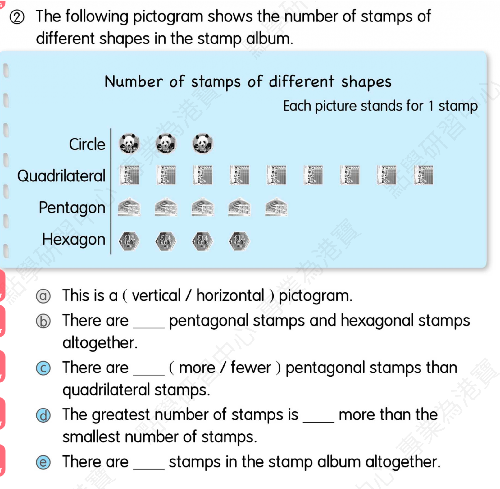

Complete the sentence with the correct present continuous form.
I ____ (eat) an apple now
Answer: am eating
Explanation: now 提示现在进行时。
已掌握
| # | 单词/词组 | 中文意思 | 例句/说明 | 已掌握 |
|---|---|---|---|---|
| noun 名词 | ||||
| 1 | cream | 奶油 | I like cream on my cake. | |
| 2 | market | 市场 | There is a market near my home. | |
| 3 | hair | 头发 | Her hair is long. | |
| 4 | gift | 礼物 | I got a gift. | |
| 5 | zebra | 斑马 | I can use zebra in class. | |
| verb 动词 | ||||
| 6 | invite | 邀请 | I invite my friend to my home. | |
| 7 | spend | 花费 | I spend one hour reading. | |
| 8 | match | 匹配；比赛 | I can use match in class. | |
| phrase 短语 | ||||
| 9 | cheer sb. up | 使某人振作起来 | A funny story can cheer him up. | |
| 10 | wait a minute | 等一下 | Wait a minute, please. | |
| 11 | Christmas Eve | 平安夜 | I can use Christmas Eve in class. | |
| 12 | good night | 晚安 | I say good night before bed. | |
| adjective 形容词 | ||||
| 13 | brave | 勇敢的 | The brave boy helps others. | |
| 14 | hard-working | 勤劳的，勤奋的 | I can use hard-working in class. | |
| 15 | lazy | 懒惰的 | I can use lazy in class. | |
| # | 单词/词组 | 中文意思 | 例句/说明 | 已掌握 |
|---|---|---|---|---|
| adjective 形容词 | ||||
| 1 | complete | 完成 | I can use complete in class. | |
| 2 | wonderful | 精彩的 | We had a wonderful day. | |
| 3 | enormous | 巨大的 | The elephant is enormous. | |
| 4 | naughty | 调皮的 | The naughty puppy runs around. | |
| 5 | cuddly | 软乎乎的；让人想抱的 | The toy bear is very cuddly. | |
| 6 | wrong | 错误的 | The answer is wrong. | |
| 7 | safe | 安全的 | This place is safe. | |
| noun 名词 | ||||
| 8 | buffet | 自助餐 | We had lunch at a buffet. | |
| 9 | toothbrush | 牙刷 | I use a toothbrush every morning. | |
| 10 | cabbage | 白菜；卷心菜 | The bunny likes cabbage. | |
| 11 | goldfish | 金鱼 | The goldfish swims in the bowl. | |
| 12 | mistake | 错误 | I made a mistake. | |
| 13 | leader | 领导者 | The leader helps the group. | |
| 14 | character | 角色；人物 | The story has many characters. | |
| 15 | crocodile | 鳄鱼 | The crocodile is in the river. | |
| 16 | washing | 洗好的衣服 | I can use washing in class. | |
| 17 | dust | 灰尘；除灰 | I can use dust in class. | |
| 18 | blog | 博客 | I can use blog in class. | |
| 19 | cheese | 奶酪 | I can use cheese in class. | |
| 20 | yawn | 打哈欠 | I can use yawn in class. | |
| 21 | adventure | 奇遇 | The story is a fun adventure. | |
| 22 | prepositions | 介词 | We are learning prepositions today. | |
| noun phrase 名词短语 | ||||
| 23 | convenience store | 便利店 | I buy water at the convenience store. | |
| 24 | department store | 百货商店 | We shop at the department store. | |
| 25 | dim sum | 点心 | We eat dim sum for lunch. | |
| verb 动词 | ||||
| 26 | celebrate | 庆祝 | We celebrate my birthday. | |
| 27 | arrive | 到达 | I arrive at school on time. | |
| 28 | wrap | 包装 | I can use wrap in class. | |
| phrase 短语 | ||||
| 29 | make a mess | 乱七八糟 | I can use make a mess in class. | |
| 30 | magic tricks | 魔术 | I can use magic tricks in class. | |
| # | 单词/词组 | 中文意思 | 例句/说明 | 已掌握 |
|---|---|---|---|---|
| time/date 时间日期 | ||||
| 1 | July | 七月 | July is the seventh month. | |
| 2 | Thursday | 星期四 | Thursday is a weekday. | |
| time unit 时间单位 | ||||
| 3 | year | 年 | A year has 12 months. | |
| 4 | week | 周 | A week has 7 days. | |
| numbers 数字 | ||||
| 5 | one | 1 | One is 1. | |
| 6 | two | 2 | Two is 2. | |
| 7 | eleven | 11 | Eleven is 11. | |
| 8 | twelve | 12 | Twelve is 12. | |
| 9 | thirty | 30 | Thirty is 30. | |
| solid shape 立体图形 | ||||
| 10 | quadrilateral prism | 四棱柱 | A quadrilateral prism has quadrilateral faces. | |
| 11 | quadrilateral pyramid | 四棱锥 | A quadrilateral pyramid has quadrilateral faces. | |
| 12 | base | 底 | The base is at the bottom. | |
| plane shape 平面图形 | ||||
| 13 | quadrilateral | 四边形 | A quadrilateral has four sides. | |
| geometry 几何 | ||||
| 14 | acute angle | 锐角 | An acute angle is smaller than a right angle. | |
| 15 | obtuse angle | 钝角 | An obtuse angle is larger than a right angle. | |
| # | 单词/词组 | 中文意思 | 例句/说明 | 已掌握 |
|---|---|---|---|---|
| operations 运算 | ||||
| 1 | total | 总共的 | Find the total number of apples. | |
| 2 | altogether | 一起 | How many are there altogether? | |
| 3 | be left | 剩下的 | How many apples will be left? | |
| geometry 几何 | ||||
| 4 | angle | 角 | An angle is made by two lines meeting. | |
| 5 | perpendicular line | 垂直线 | Perpendicular lines meet at a right angle. | |
| 6 | parallel | 平行 | Parallel lines never meet. | |
| 7 | adjecent side | 邻边 | I can read adjecent side in a math question. | |
| 8 | adjacent side | 邻边 | These are adjacent sides. | |
| question word 题目词 | ||||
| 9 | onwards | 向前；继续向前 | Count onwards from 20. | |
| 10 | respectively | 分别地 | Tom and Ben have 2 and 3 books respectively. | |
| comparison 比较 | ||||
| 11 | less | 更少的；小于 | 8 is less than 10. | |
| 12 | fewer | 更少 | There are fewer apples in this box. | |
| position 位置 | ||||
| 13 | front | 前面 | The door is at the front of the room. | |
| operations calculation 运算 | ||||
| 14 | expression | 式子 | Write the expression in horizontal form. | |
| 15 | division | 除法 | Division is the opposite of multiplication. | |
| 16 | dividend | 被除数 | The dividend is divided by the divisor. | |
| 17 | column form | 竖式形式 | Write it in column form. | |
| teacher math vocabulary 老师数学词汇 | ||||
| 18 | each | 每个 | I can read each in a math question. | |
| 19 | beween and | 在...之间 | I can read beween and in a math question. | |
| currency money 货币 | ||||
| 20 | exchange | 交换 | We exchange money at the counter. | |
| 21 | pay for | 支付 | I pay for the book. | |
| 22 | expensive | 昂贵的 | I can read expensive in a math question. | |
| measurement 测量 | ||||
| 23 | measure | 测量 | We measure the length with a ruler. | |
| position order 位置和顺序 | ||||
| 24 | following | 下面的 | Answer the following questions. | |
| data charts 统计图 | ||||
| 25 | pictogram | 象形图 | Read the pictogram. | |
| 句型结构 | ||||
| 26 | Angle ... is the smallest. | 角......是最小的。 | Angle B is the smallest. | |
| 27 | The lines are perpendicular to each other. | 这些线彼此垂直。 | The lines are perpendicular to each other. | |
| 28 | ... is to the east of ... | ......位于......的东侧。 | The school is to the east of the park. | |
| 29 | ... is to the west of ... | ......位于......的西侧。 | The bank is to the west of the school. | |
| 30 | ... is to the north of ... | ......位于......的北侧。 | The playground is to the north of the hall. | |
